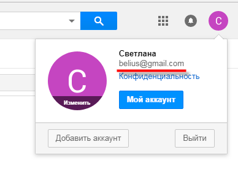

Как бесплатно создать электронную почту
В этом уроке я покажу, как создать электронную почту. Сначала мы выберем почтовый сервис, а потом быстро зарегистрируемся. Сразу после этого мы получим новый ящик в интернете (email).
Где можно бесплатно сделать почту
Чтобы завести электронную почту, нужно зарегистрироваться на каком-нибудь почтовом сайте. Таких сайтов в интернете несколько и самые известные это Яндекс, Gmail.com (Гугл) и Mail.ru.
На каком же из них лучше сделать адрес? По большому счёту это не важно – они все примерно одинаковые. И по возможностям, и по удобству, и по безопасности. Какие-то чуть лучше по одним критериям, другие – по другим. Но разница несущественная. С основной своей функцией – приём и отправление писем в любую часть мира – все эти сайты справляются одинаково хорошо.
Пошаговая инструкция по регистрации нового адреса
Итак, вы определились с сайтом, на котором хотели бы создать электронную почту. Теперь на нем нужно открыть адрес, а для этого пройти регистрацию.
Регистрация - это всего лишь заполнение небольшой анкеты. Вам нужно будет ответить на несколько вопросов о себе, выбрать для ящика название и придумать пароль.
Заполнение анкеты – дело хоть и простое, но крайне важное. Ведь от этого зависит не только то, какой у вас будет адрес, но и возникнут ли в будущем с ним проблемы. Часто люди не уделяют регистрации должного внимания, а потом не могут войти в свой ящик.
Сейчас я подробно расскажу и покажу на картинках, что и куда нужно печатать, чтобы грамотно настроить электронную почту на компьютере или ноутбуке.
Открывайте инструкцию для своей почты и приступайте к регистрации!
Gmail.com
Gmail.com – это электронная почта от Google (Гугла). Чтобы ее создать, нужно зарегистрировать новый аккаунт. Сейчас я покажу, как это делается.
1. Переходим по ссылке gmail.com
Обычно сразу открывается страница входа в ящик. Но так как у нас его еще нет, нажимаем на «Другие варианты» и выбираем «Создать аккаунт».
2. Заполняем регистрационную анкету и нажимаем на кнопку «Далее».
Покажу, как эту анкету заполнил я. Вам же нужно напечатать туда свои данные. Подробнее о заполнении читайте дальше.
Как вас зовут. Печатаем сюда свое имя и фамилию. Лучше печатать настоящие, но можно и выдуманные.
Придумайте имя пользователя. Здесь нужно указать название для своего нового ящика. К нему добавиться окончание @gmail.com. Всё целиком – это и есть адрес вашей электронной почты.
Имя пользователя должно состоять строго из английских букв. Может включать в себя цифры и точки.
Многие имена уже заняты другими людьми, но система подскажет, что в этом случае делать. Кроме того, будет предложено одно или несколько похожих имен, которые пока свободны.
Придумайте пароль. Пароль – этот тот ключ, которым вы будете открывать свой ящик. Он должен состоять минимум из восьми знаков. Это могут быть цифры, английские буквы, а также и цифры и буквы.
Пароль при вводе набирается точками. Кроме того, он чувствителен к размеру букв. Это значит, что почта не откроется, если потом вместо большой буквы набрать маленькую.
Подтвердите пароль. Сюда печатаем то же самое, что и в предыдущем поле – те же самые буквы-цифры.
Обязательно запишите в надежное место указанное имя пользователя и пароль. Без этой информации могут возникнуть проблемы с доступом к почте.
- Дата рождения. Указываем здесь день, месяц и год своего рождения.
- Пол. Выбираем свой пол. Кроме женского и мужского, можно выбрать «Другой» или «Не указан».
- Мобильный телефон. Поле для печати своего номера телефона.
- Запасной адрес эл. почты. Если у вас уже есть адрес почты (не важно, на каком она сайте), можете его сюда добавить. А можете и не добавлять.
- Страна. Обычно автоматически указывается правильная страна. Если это не так, установите свою страну.
3. Нажимаем на «Далее» и появляется окошко «Политика конфиденциальности и Условия использования». Текст в окошке нужно прокрутить вниз (а лучше еще и прочитать) и нажать «Принимаю».
Вот и всё! Ящик зарегистрирован и Гугл с радостью сообщает его адрес. Записываем его в надежное место и нажимаем на «Перейти к сервису Gmail».

Сразу после этого откроется ваша новая почта.
Как узнать свой email и правильно его ввести
Email (емайл) – это адрес электронной почты, уникальное название личного ящика в интернете. Это то самое имя/логин, которое вы выбирали при создании электронной почты. Но кроме этого в email входит еще и приставка:
- в Mail.ru эта приставка может быть @mail.ru, @list.ru, @bk.ru или @inbox.ru. Какая-то одна из них.
- в Яндексе приставка только одна - @yandex.ru. Но каждый электронный ящик в системе доступен еще и с другими окончаниями: @ya.ru, @yandex.ua, @yandex.kz, @yandex.com, @yandex.by.
- в Gmail.com приставка только одна, без вариантов - это @gmail.com
Чтобы корректно ввести email, нужно написать логин и правильную приставку. Без пробелов и лишних точек.
Например, я хочу написать на визитке свой адрес почты, которую зарегистрировал на gmail.com. При регистрации я выбрал имя пользователя ivan.petrov35. Значит, написать нужно следующее: ivan.petrov35@gmail.com
Если бы у меня был ящик с таким же названием, но на Яндексе, надо было бы указывать такой адрес: ivan.petrov35@yandex.ru
Вместо @yandex.ru можно напечатать любую из этих приставок: @ya.ru, @yandex.ua, @yandex.kz, @yandex.com, @yandex.by. Они все принадлежат одному и тому же ящику.
А вот с адресом на Майле сложнее. На этом сайте есть несколько приставок: @mail.ru, @list.ru, @bk.ru и @inbox.ru. Поставить любую из них нельзя – нужно указывать только ту, которую выбрали при регистрации.
Значит, если я создавал почтовый ящик с приставкой @list.ru, то указывать адрес нужно именно с ней. А если вместо нее укажу другую, например, @mail.ru, то письма ко мне доходить не будут.
На заметку: адрес своей электронной почты (email) можно узнать через правый верхний угол ящика.
в mail.ru :
в Яндексе :
в gmail.com :
